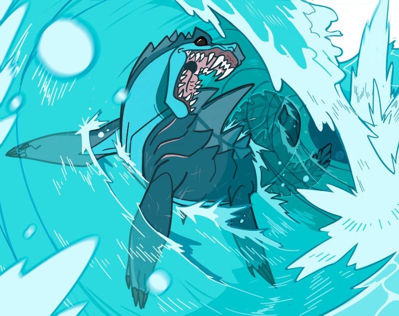

El mundo
«Makai Mauka» es una ambientación para el juego de rol Ryuutama basado en los mitos y leyendas de las islas de la polinesia.
XXX
Hua Tarakona
XXX
Las ballenas

XXX
Cultura y sociedad
XXX
Tatuajes
Los habitantes de las islas tienden a hacerse tatuajes por todo el cuerpo, incluso en la cara. Estos tienen formas geométricas y diseños tribales muy simples de diferentes animales cuyas virtudes posee la persona tatuada.
Hacer tatuajes es una profesión muy respetada y sus secretos pasan de maestro a aprendiz. Normalmente, cada comunidad tiene un maestro y un aprendiz, pero cuando termina su entrenamiento, los aprendices se lanzan a viajar durante un tiempo ofreciendo sus servicios en aquellos lugares donde no hay tatuadores establecidos, hasta encontrar un sitio donde establecerse.
No cualquiera es tatuado, ese honor solo sé reserva a las personas que han hecho cosas importantes para la comunidad donde viven. Es por ello que en situaciones sociales o de combate la gente con tatuajes trata de enseñarlos lo máximo posible, bien como forma de mostrar su importancia y valor o como forma de intimidación. Una buena cantidad de tatuajes podría dar ventaja a la hora de intimidar o impresionar a humanos y monstruos de las islas.
Surf
Tangaloa enseñó a construir tablas de surf y a usarlas para surcar las olas y por eso se le venera. Sin el surf nuestras vidas estarían vacías y sin hopupu.
El surf es el deporte más practicado por los habitantes de Hua Tarakona. Es tan importante que los y las mejores surfistas son tratados como estrellas y viven simplemente de hacer surf.
Las competiciones son eventos importantes y los premios que se ofrecen pueden permitir a un buen surfista sobrevivir todo el año. Es por ello que no es raro encontrarse grupo de surfistas que viajan de asentamiento en asentamiento participando en diferentes pruebas y competiciones para ganarse la vida y poder seguir viajando practicando su deporte favorito.
No es extrañar llegar a una cala perdida y encontrarse con un círculo de tablas de surf clavadas en la arena y en su interior a surfistas descansando junto al fuego.
Razones para viajar
En viaje forma parte del espíritu de todo habitante de Hua Tarakona. Sus gentes llevan navegando y colonizando nuevas islas desde época de las ballenas primigenias.
XXX
Tabu
XXX
Aumakuas, kupuas y semidioses
XXX
Términos
XXX
Hauka
Hauka se refiere tanto a la persona como al grupo que está realizando un viaje. XXX
Hopupu
XXX
Makai y mauka
Makai y mauka son unas de las palabras más útiles que puedes aprender. Estos términos direccionales te ayudarán a orientarte en las islas. Makai te dirige «hacia el mar», mientras que mauka te envía «hacia las montañas», un sistema perfecto para la vida en la isla. Nunca tendrás que preocuparte por dónde está el norte cuando tengas estos puntos de referencia naturales como guía.
Pono
Pono es el equilibrio perfecto entre hacer lo correcto y vivir en armonía con todo lo que te rodea. Esta palabra engloba moralidad, rectitud, y vida ética, todo a la vez. Cuando se describe algo como pono, están diciendo que es correcto en todos los niveles.
Nuevas clases, profesiones y arquetipos
XXX
Tatuador
XXX
Surfista
XXX
Equipo
XXX
Materiales
Un punto importante del equipo es que el metal es conocido por las gentes de las islas, pero es escaso y no son hábiles forjando el metal. Sin embargo, sí son buenos trabajando la madera y trenzando las hojas de palma.
La madera es un elemento fundamental en la vida de las islas, es abundante, fácil de trabajar, duradera, resistente y flota. Por eso encontrarás bastantes artesanos especializados en el trabajo de la madera, no deberías de hablar de carpinteros en general, sino de ebanistas, carpinteros navales, constructores de chozas, tallistas, etc.
Lo mismo pasa con la hoja de palma, que también encontramos en varias artesanías, como cesteros, techadores, fabricantes de velas, etc. que la transforman en diferentes elementos como cestas, velas de barco, sombreros, cuerdas y correas, etc.
El equipo típico de metal, como una cantimplora, tendrá su contrapartida en madera y productos naturales, por ejemplo, una calabaza vaciada, secada y pulida con un corcho puede ser un perfecto recipiente para el agua.
Debido a la intensa actividad volcánica de las islas, los materiales como la obsidiana o el basalto son muy abundantes y los artesanos isleños también son diestros en su manufactura en forma de utensilios y armas.
XXX
Armas
Tus hauka disponen de una gran variedad de lanzas de todos los tamaños (pequeñas, medidas y pesadas) y tanto de cuerpo a cuerpo como a distancia.
Las armas, sobre todo las grandes de madera, están profusamente decoradas con motivos geométricos y marítimos, convirtiéndolas muchas veces en auténticas obras de arte. También es normal que tengan elementos decorativos como, penachos de plumas u hojas trenzadas de vivos colores.
Hojas cortas
XXX
Hojas

Remo: Estas contundentes herramientas de madera tienen lados afilados en la parte de la pala y buenos mangos para asirlos bien y dar golpes contundentes, así que son unos utensilios muy útiles tanto para navegar como para combatir.
Armas de Asta

Tao: Lanza de madera normalmente con una punta hecha del pincho de un pez espada o de los afilados huesos de la cola de una raya.

Horca: Este utensilio perfecto para la pesca de peces y crustáceos puede usarse como una eficaz arma de combate.
Hachas

Leiomano: Esta arma similar a una pala de jugar a pelota tiene el borde lleno de pequeños dientes de tiburón insertados.
Arcos y ondas
XXX
Como dato importante diremos que la onda que es usada como arma de guerra, mientras que el arco y las flechas se reservan normalmente para la caza.
Armaduras
XXX
Protecciones de palma trenzada
Estas protecciones están hechas de varias capas de hojas de palma trenzadas. Se crean protecciones para diferentes partes del cuerpo. No son especialmente resistentes, pero son baratas, fáciles de fabricar, ligeras y flexibles
Plantas medicinales
XXX
Kava
La kava es una planta de la que se saca una bebida con efectos psicoactivos. Produce relajación muscular, somnolencia y ganas de hablar. Se ha utilizado tradicionalmente para tratar para aliviar infecciones, dolores, estrés e insomnio. La raíz se muele con un trozo de coral y se le añade agua fría para poder beberla.
Objetos comunes
XXX

Konane
El konane es una juego de mesa, muy parecido a las damas o el go. El konane se juega utilizando pequeños trozos de coral blanco y lava negra sobre una gran roca tallada y o un tablón de madera que funcionaba como tablero y mesa. Se considera un juego de roedores inteligentes y las competiciones son de muy alto nivel.
De normal, un konane de viaje tiene tamaño 3, pero de normal los que se tienen en las casas y son de mejor calidad ocupan tamaño 5.
Herramientas de tatuaje
Las herramientas de tatuaje consisten en un peine con dientes de hueso o concha de tortuga unidos a un mango de madera. Los dientes estaban empapados en tinta a base de carbón diluido en aceite o agua. El peine se golpean con un palo de madera para pinchar la piel continuamente y meter la tinta en su interior.
Las herramientas de tatuaje ni se compran ni se venden, se pasan de maestro a aprendiz y se aprende a fabricarlas como parte del entrenamiento de tatuador.
Tambor de calabaza Ipu
Este tambor hecho con calabazas vaciadas, secadas y juntadas con una cuerda de fibras de coco, sirve para marcar el ritmo de los bailes hula. La superficie se pule con arena y como es muy frágil no se graba nada en su superficie. En su lugar se cubren con una red y se decora la red con coloridos elementos florales.
Embarcaciones
XXX

Canoa
Esta embarcación tallada del tronco de un árbol, permite una tripulación de 3 hauka, dos remando más un tercer pasajero.
Puedes ser muy simples o estar profusamente decoradas con motivos vegetales, animales, geométricos o mitológicos. Es el medio de transporte principal y sirve tanto en el mar como en los ríos.
Tabla de surf
Estas tablas de madera pulida se deslizan usando la fuerza motriz de su tripulante o la fuerza de las olas. No son fáciles de maniobrar y se necesitan años de práctica poder usarlas y hacer las acrobacias que algunos consiguen hacer. Permite una tripulación de 1 hauka.
Catamarán y canoa multicasco
Estos navíos se caracterizan por tener dos o más cascos paralelos y de la misma longitud. Los cascos están unidos por troncos que también soporta el palo del velamen. La cubierta se crea con redes y tablas sobre los cascos y los troncos.
Es el navío perfecto para viajes largos entre islas y para pesca de altura, ya que son rápidos, estables y de poco calado para evitar los arrecifes de corral. Además, tienen una gran cantidad de espacio habitable donde pueden estar sus tripulantes y su carga.
Según el tamaño, podría permitir desde 4 a 20 personas con su equipaje y agua y comida para un largo viaje.
De hecho, son los navíos con los que los humanos han ido explorando todas las islas del Pacífico.
Tabla de precios especiales
| Objeto |
Precio |
| Remo |
XXX |
| Tao |
XXX |
| Horca |
XXX |
| Leiomano |
XXX |
| Protecciones de palma trenzada |
XXX |
| Kava |
XXX |
| Konane |
XXX |
| Herramientas de tatuaje |
XXX |
| Tambor de calabaza Ipu |
XXX |
| Canoa |
XXX |
| Tabla de surf |
XXX |
| Catamarán |
XXX |
Magia
XXX
Magia de las mareas (Estacional)
XXX
Bajamar diurna (primavera)
XXX
Pleamar diurna (verano)
XXX
Bajamar nocturna (otoño)
XXX
Pleamar nocturna (invierno)
XXX
Objetos mágicos
XXX
Anzuelo de Maui
Este anzuelo tallado de un hueso, atrapa cualquier cosa que esté en el fondo del mar a distancia de tu sedal. Es lanzarlo y atrapa lo que busques. Otra cuestión es si tienes la fuerza suficiente para tirar de él, porque si no puedes sacar el objeto deseado, este no se desenganchará y tendrás que cortar el sedal.
Figura de la canoa de Hilo
Hilo es una semidivinidad que construyó la primera canoa. Esta figurilla, que te cabe en la mano (tamaño 1), se convierte es una canoa con remos cuando se echa al agua y vuelve a su tamaño original cuando se saca del agua.
Calabaza de Maui
Esta calabaza fue usada por Maui para encerrar a los vientos. Permite encerrar una tormenta o un tifón. Si la calabaza está llena, tendrá que vaciarse antes liberando la tormenta o el tifón para poder volver a meter dentro otra tormenta. Se cuenta que Maui atrapó un tifón que amenazaba su poblado y luego lo libero sobre una flota de invasores.
Azuela de Ratʻa
Esta azuela de carpintero, que perteneció al mítico rey Ratʻa, permite construir estructuras de 1 casilla(5 cm) por turno de trabajo y siempre que haya madera cerca. Puedes crear refugios, puentes, escaleras, presas, etc. son construcciones muy básicas pero bien hechas y resistentes. Tras terminar de trabajar, tienes la condición «cansado».
Sal de Kane
El dios creador Kane, salo el mal para purificarlo y la sal que le quedo la guardo en una bolsa de hojas de palmas. La bolsa nunca se queda sin sal y donde se esparce la sal no puede entrar o pasar kupuas y otros espíritus demoniacos. La protección dura 1 día hasta la misma marea que ahora.
Llama de Pele
Esta llama eterna no se puede apagar, te mantiene caliente incluso en la nieve de las montañas y prende cualquier cosa inflamable en una ronda. Si se le pone un mango de algo que no prenda como piedra o metal puede usarse como arma muy eficaz.
Objetos mágicos menores
- Hacha de piedra que te permite corta madera sin cansarte
- Trozo de lava que no se enfría. Sirve como calefactor o para calentar líquidos
- Tiputa (camiseta de hojas de palma trenzada) que te hace flotar en el agua
- Calabaza vaciada que siempre tiene aire dentro que respirar
- Vela dentro de cuenco de cáscara de coco que revela la verdadera apariencia de un cambiaformas bajo su luz
Viajar
XXX
Animales acompañantes
Debido a que Hua Tarakona es un archipiélago, el mar es un elemento muy importante que marca muchos aspectos de los viajes. En el caso de los animales acompañantes debemos dividirlos en animales terrestres y acuáticos a la hora de establecer.
Terrestres
No existen grandes animales herbívoros que sirvan de carga o de monta como caballos, burros o alpacas. Pero si hay grandes cerdos salvajes domesticados a los que pueden ponerse alforjas para transportar equipo y mercancías.
XXX
Reglas para los animales en entornos márinos
- Los animales terrestres gastan 1 de comida y agua al día en terrenos acuáticos como lo hacen en Desiertos o Alta Montaña.
- Saben nadar, pero no pueden hacerlo durante mucho tiempo, quizas lo suficiente para atravesar un río llegar desde la playa a un islote cercano. Por ello, como tus hauka, solo podrán viajar por mar en embarcaciones.
Acuáticos
Dentro de los animales acuáticos que pueden acompañarte tenemos:
- Tortugas marinas.
- Delfines.
- XXX
Estos animales no pueden ser montados, pero pueden tirar de una embarcación como canoas y catamaranes.
XXX
Terrenos
Las islas de Hua Tarakona suponen nuevos tipos de terrenos como playas o volcanes, pero teniendo en cuenta que los viajes también se hacen por mar, tenemos nuevos terrenos acuáticos o masas de aguas con algunas reglas especiales.
Hay una serie de terrenos que no deberían entrar en tus aventuras, pero eres libre de meterlos si lo deseas. Ten en cuenta que hay miles de islas en Hua Tarakona y puede haber todo de tipo de terrenos.
- Desiertos, pedregales y yermos: Todos son sustituidos por terrenos muy parecidos, los campos de lava y los volcanes.
- Bosques, bosques primarios y junglas: Son sustituidos por selvas y selvas vírgenes.
- Montañas: Las montañas, por su origen volcánico, son muy peligrosas y no son fáciles de atravesar.
- Alta montaña: No hay grandes montañas ni cordilleras, y aunque algunas montañas son altas y pueden tener nieve, lo normal es rodear las islas por la costa.
Las praderas, las colinas y los pantanos se quedan como están.
Acantilados litorales
Las zonas de la costa que no son playas suelen ser acantilados poblados de aves marinas con las olas chocando violentamente contra ellos. Con las mareas bajas suelen descubrirse cuevas y zonas con charcas donde pescar y recolectar crustáceos y bivalvos en las charcas que quedan al retirarse la marea.
XXX
Campos de lava
XXX
Riachuelos
Debido a la orografía de las islas, los riachuelos son la manera más rápida de llegar desde la costa hasta las montañas. Seguir el cauce de los riachuelos es una senda fácil y normalmente recta.
El único problema es salvar los saltos de agua. Mientras más cerca se está de la cima de las montañas más grandes suelen ser. Esos saltos de agua son peligroso tanto al bajarlos como al subirlos.
XXX
Montaña
No hay grandes montañas en las islas de Hua Tarakona, pero aun así son sitios peligrosos debido a su origen volcánico. Puede haber abruptos precipicios y estrechos pasos originados por temblores, muros de lava solidificada o laderas llenas de puntiagudas piedras basálticas.
Playa
Las playas de las islas son una maravilla para la vista. Largas y de arena fina con palmeras cocoteras donde las que conseguir alimento y bebida es bastante fácil, pero también otros materiales como hojas de palma para hacer tejidos, algas para medicinas o espinas y dientes de tiburón para hacer armas y anzuelos. La mayoría de las comunidades (poblados, pueblos e incluso ciudades) se encuentran cerca de playa, especialmente si están guarecidas de las corrientes y el oleaje.
XXX
Selva/Selva virgen
XXX
Volcán/Volcán activo
La inmensa mayoría de las islas de Hua Tarakona son de origen volcánico y bastantes de ellas tienen un volcán, pero muy pocas de ellas tienen un volcán activo.
Moverse en una zona volcánica es muy complicado, no hay casi recursos y los pocos que puedas encontrar pueden ser peligrosos, pero se vuelve mucho peor cuando el volcán está activo.
Activo supone que un volcán puede expulsar gases nocivos, hay temblores y corrimientos de tierras e incluso alguna pequeña grieta llena de borboteante lava. Si el volcán está expulsando ríos de lava, gases sulfúricos y piroclastos es imposible viajar a través de él y seguramente acabarás muerto si intentas moverte por esa zona.
Tabla de nuevos terrenos
| Terreno |
Dificultad |
| Cauce de un río, Playa |
6 |
| Selva, Acantilados litorales |
8 |
| Montaña, Selva profunda |
10 |
| Volcán |
12 |
| Volcán activo |
14 |
Masas de agua
El mar siempre debería estar presente en las aventuras. Es una fuente interesante de aventuras tanto por peligroso e inexplorado como por las cosas que puede dejar la marea en la playa. Además, es un entorno cambiante y lo que ayer estaba en un lugar puede haber desaparecido la siguiente vez.
Viajar por el mar es algo que el manual Básico no se ve reflejado, pero en un gran archipiélago como el de Hua Tarakona los viajes a en barco bordeando las islas o en abierto para moverte de grupo de islas en grupo de islas son muy comunes. Es por ello que tenemos nuevos terrenos, en realidad masas de agua, para estos tipos de viajes.
Reglas para los viajes
XXX
Arrecifes
XXX
Mar abierto
XXX
Costa
En el momento que dejas de ver tierra entras en mar abierto. Aquí tus hauka están solos a merced del agua y del viento. No hay ayuda posible y los encuentros con otras embarcaciones pueden ser peligrosas.
XXX
Río navegable
En las islas más grandes hay ríos navegables que los locales han aprendido a surcar con sus canoas. Estos ríos suelen ser tranquilos y fáciles de navegar.
Las comunidades del interior suelen crecer alrededor de estos ríos tanto por los recursos que ofrecen, como por las posibilidades de transporte y comunicación que ofrecen.
Cuando el río deja de ser navegable, es porque se ha convertido en riachuelos, un terreno muy distintos en el que tus canoas no valen para nada.
Eventos durante el viaje en el mar
XXX
| Evento |
Condiciones |
Severidad |
| XXX |
XXX |
XXX |
Tabla de masas de agua
| Masa de agua |
Dificultad |
| Playa, Río navegable |
6 |
| Costa cubierta |
8 |
| Costa expuesta |
10 |
| Arrecifes |
12 |
| Mar abierto |
14 |
Clima
En la mayoría de las islas del Pacífico solo existen dos estaciones, verano (kau) e invierno (hooilo). Las temperaturas no varían muchos entre estaciones (de 25 a 30 °C). La única diferencia entre ellas es la cantidad de lluvia.
Las únicas zonas donde las temperaturas son bajas, incluso puede haber nieve, son en las cimas de las montañas donde la temperatura puede bajar a casi 0 °C.
XXX
Bestiario
El mundo de Hua Tarakona es un mundo peligroso plagado de seres extraños, poderosos y a veces peligrosos y agresivos.
Los monstruos terrestres de esta ambientación no tienen una estación predilecta, ya que casi no hay cambios entre kau (verano) y hooilo (invierno), en su lugar XXX.
Los monstruos marinos se ven afectados por las mareas, en vez de por XXX, siendo más activos en su marea y obteniendo los beneficios que obtendría un monstruo en su estación.
Los monstruos de esta ambientación pueden ser terrestres, acuáticos o anfibios. Este dato viene marcado por su tipo.
Kupua, espíritus diabólicos y vengativos
Los kupuas son espíritus normalmente diabólicos y vengativos con poderes de cambiaformas. No son grandes espíritus, sino menores con aspecto y ciertas capacidades mágicas relacionadas con su forma alternativa.
Hay kupuas de todo tipo de formas, desde animales como perros o jabalíes a plantas o incluso nubes y rocas. Si se transforma en ave puede volar y tiene garras terribles, si se transforma en tiburón puede nadar como un pez y tiene terribles dientes.
Suelen ser más embaucadores y tramposos que agresivos y beligerantes, pero si tienen que atacar lo harán sin dudar.
Kupua de agua
Suelen transformarse en animales marinos como tiburones o mantarrayas. Suelen estropear las redes y aparejos de pesca de los pescadores y jugarles malas pasadas a los bañistas y surferos.
- Nivel/Tipo: XXX
- Botín: XXX
- PM/PG: X / X
- Iniciativa: XXX
- Salud: XXX
- FUE/DES/INT/ESP: X / X / X / X
- Impactar/Daño: dX+dX / dX
- Defensa: XXX
- Habilidad especial: Forma acuática. Pueden respirar bajo el agua y nada a gran velocidad.
- Terreno habitual: XXX
- XXX/Marea: XXX
Kupua de aire
Pueden transformarse en águilas y halcones de gran tamaño con terribles garras. Se conocen hasta casos de gallos realmente agresivos.
- Nivel/Tipo: XXX
- Botín: XXX
- PM/PG: X / X
- Iniciativa: XXX
- Salud: XXX
- FUE/DES/INT/ESP: X / X / X / X
- Impactar/Daño: dX+dX / dX
- Defensa: XXX
- Habilidad especial: Vuelo. Pueden volar a gran velocidad en su forma animal.
- Terreno habitual: XXX
- XXX/Marea: XXX
Kupua de Fuego
Estos kupuas no tienen una forma alternativa, directamente su cuerpo son de roca al rojo vivo y/o lava.
- Nivel/Tipo: XXX
- Botín: XXX
- PM/PG: X / X
- Iniciativa: XXX
- Salud: XXX
- FUE/DES/INT/ESP: X / X / X / X
- Impactar/Daño: dX+dX / dX
- Defensa: XXX
- Habilidad especial: Lava como sangre. Son seres de lava y rocas incandescentes, así que son inmunes al fuego y sus ataques hacen XXX extra de daño de fuego.
- Terreno habitual: Volcanes
- XXX/Marea: XXX
Kupua de Nube
Pueden pasarse en una especie de forma gaseosa o de nube que les hace intangibles y levitar y ser movidos por los vientos
- Nivel/Tipo: XXX
- Botín: XXX
- PM/PG: X / X
- Iniciativa: XXX
- Salud: XXX
- FUE/DES/INT/ESP: X / X / X / X
- Impactar/Daño: dX+dX / dX
- Defensa: XXX
- Habilidad especial: Gaseoso. En su forma gaseosa son totalmente invulnerables, pero se mueven muy lento y están a merced de los vientos.
- Terreno habitual: XXX
- XXX/Marea: XXX
Kupua plantas
Estos kupuas llevan años o siglos en su forma alternativa vegetal y han olvidado como eran antes y como destransformarse. Normalmente, juegan malas pasadas a los hauka, por ejemplo, con frutos de pinta deliciosa y sabor horrible o robando armas y equipo a los viajeros que acampan cerca.
Los más antiguos pueden ser más agresivos y atrapar entre sus zarzas y lianas a la gente para internar asfixiarlos.
- Nivel/Tipo: Terrestre*
- Botín: XXX
- PM/PG: X / X
- Iniciativa: XXX
- Salud: XXX
- FUE/DES/INT/ESP: X / X / X / X
- Impactar/Daño: dX+dX / dX
- Defensa: XXX
- Habilidad especial: Zarcillos. Pueden animar sus zarcillos para usarlos como manos para coger objetos y llevárselo. También pueden usarlos para atrapar a sus víctimas y asfixiarlos XXX
- Terreno habitual: XXX
- XXX/Marea: XXX
*Puedes hacerlos acuáticos y que sean grandes bloques de algas sargazos que pueden rodear las embarcaciones.

Moʻo, espíritu acuático cambiaforma
Las moʻos son entidades multimorfas y suelen adoptar la forma de reptiles gran tamaño, de humanos y hasta de pequeños gecos. Por eso se les considera a veces como kupuas, pero son veneradas como aumakuas (espíritus familiares). Las más antiguas y poderos suelen tener poderes sobre el clima y el agua. Son anfibias y suelen frecuentar pequeñas masas de agua dulce como estanques, pozas o remansos de los ríos.
Cuando una moʻo muere, su cuerpo se petrifica y se convierte en parte del paisaje, lo cual explica las extrañas formas que pueden tomar las piedras.
Suelen ser espíritus burlones y vividores que disfruta de la vida y gustan de relacionarse con los hauka que visitan las cascadas y ríos donde suelen vivir. Llegan incluso a coquetear e incluso seducir y mantener relaciones con los hauka que las visitan.
Según los cuentos, cada moʻos tiene una habilidad excepcional, algo que hacen extraordinariamente bien, quizás sean unas surfistas increíbles, grandes artesanas o excepcionales cantantes. Puede que tus hauka tengan que buscar una moʻo con habilidades especiales que les ayude.
Humanoide
- Nivel/Tipo: XXX
- Botín: XXX
- PM/PG: X / X
- Iniciativa: XXX
- Salud: XXX
- FUE/DES/INT/ESP: X / X / X / X
- Impactar/Daño: dX+dX / dX
- Defensa: XXX
- Habilidad especial: Habilidad excepcional. Hay una habilidad, destreza o artesanía que se le da excepcionalmente bien y tira siempre con un +4.
- Terreno habitual: XXX
- XXX/Marea: XXX
Gran lagarto
- Nivel/Tipo: XXX
- Botín: XXX
- PM/PG: X / X
- Iniciativa: XXX
- Salud: XXX
- FUE/DES/INT/ESP: X / X / X / X
- Impactar/Daño: dX+dX / dX
- Defensa: XXX
- Habilidad especial: Habilidad excepcional. Hay una habilidad, destreza o artesanía que se le da excepcionalmente bien y tira siempre con un +4.
- Terreno habitual: XXX
- XXX/Marea: XXX
Nanaue, escualiántropos

A este monstruo se le describe como un hombre con la boca de un tiburón en la espalda que puede transformarse en un tiburón gigante y nadar grandes distancias a mucha velocidad.
Siente una tremenda ansía por la carne humana, por lo que siempre andan como tiburones en la costa vigilando a los pescadores o como humanos por caminos cercanos a la costa a la caza de hauka solitarios. Tiene predilección por la carne podrida y se dice que matan a sus víctimas y dejan sus cuerpos en cuevas y cavidades para darse un festín cuando la carne se pudre.
Sus ansias de cazar aumentan durante su marea, la pleamar nocturna, con lo que suelen atacar de noche a las presas que han vigilado y seguido durante el día. Debido a ser un cambiaformas prefiere intentar engañar a sus víctimas haciéndose pasar un viajero buscando un fuego donde pasar la noche.
La gran boca de tiburón en su espalda es lo único que los identifica como nanaues, por lo que siempre llevan ropa, como una capa, una camisa o una tiputa, para taparla.
- Nivel/Tipo: 7 / Anfibio
- Botín: XXX
- PM/PG: X / X
- Iniciativa: XXX
- Salud: XXX
- FUE/DES/INT/ESP: 8 / 8 / 6 / 8
- Impactar/Daño: d8+d8 / d8
- Defensa: 4
- Habilidad especial: Grandes nadadores. Pueden cubrir grandísimas distancias (unos 200 km) en 1 día.
- Terreno habitual: XXX
- Marea: Pleamar nocturna

Taniwha, dragón protector
Los taniwha son grandes seres sobrenaturales multimorfo anfibios. Cuando están en tierra tienen forma de reptil gigantesco con rasgos dragonescos. Cuando están en el agua suelen parecerse más a plesiosaurios principalmente con aletas como extremidades.
Viven en pozas profundas de ríos, cuevas oscuras o en el mar, especialmente en lugares con corrientes peligrosas u olas gigantes.
Suelen ser considerados kaitiaki (guardianes protectores) muy respetados, pero hay algunos peligrosos y malvados, que, por ejemplo, secuestran personas para que les sirvan.
Algunos llegan a tener un gran tamaño de forma que tus hauka pueden viajar en su espalda, si fuera necesario.
Son grandes, cavadores pudiendo crear canales acuáticos, abriendo cuevas incluso creando puertos. Se sabe de taniwha que han creado puertos para las comunidades que protegen o castigado a otras desviando ríos del que vivían dichas comunidades.
Como los moʻo, cuando muere, su cuerpo se petrifica y se convierte en parte del paisaje pudiendo formar incluso islote o grandes monolitos de piedra.
- Nivel/Tipo: 7 / Anfibio
- Botín: XXX
- PM/PG: 16 / 40
- Iniciativa: 8
- Salud: 12
- FUE/DES/INT/ESP: 10 / 8 / 6 / 8
- Impactar/Daño: d10+d8 / d10
- Defensa: 4
- Habilidad especial: Capacidades mágicas. Pueden usar todos los Conjuros de Magia de su marea predilecta.
- Terreno habitual: Acantilados, Mar abierto, Playa, Río navegable
- Marea: Cada taniwha tiene su marea predilecta.
Animales
Las islas no tienen grandes animales terrestres que pudieran ser un problema para tus hauka, pero todo eso cambia en el mar, donde tiburones, morenas o mantarrayas pueden ser muy peligrosos.
Tiburón
XXX
- Nivel/Tipo: XXX
- Botín: XXX
- PM/PG: X / X
- Iniciativa: XXX
- Salud: XXX
- FUE/DES/INT/ESP: X / X / X / X
- Impactar/Daño: dX+dX / dX
- Defensa: XXX
- Habilidad especial: XXX
- Terreno habitual: XXX
- XXX/Marea: XXX
Mantarraya
XXX
Su capacidad de salto fuera de agua les permite atacar a seres que no estén dentro del agua, por ejemplo encima de una canoa.
- Nivel/Tipo: XXX/Acuático
- Botín: XXX
- PM/PG: X / X
- Iniciativa: XXX
- Salud: XXX
- FUE/DES/INT/ESP: X / X / X / X
- Impactar/Daño: dX+dX / dX
- Defensa: XXX
- Habilidad especial: Cola venenosa. Al final de su cola tienen un dardo afilado con veneno. XXX
- Terreno habitual: XXX
- XXX/Marea: XXX
Almeja gigante
XXX
- Nivel/Tipo: XXX/Acuático
- Botín: XXX
- PM/PG: X / X
- Iniciativa: XXX
- Salud: XXX
- FUE/DES/INT/ESP: X / X / X / X
- Impactar/Daño: dX+dX / dX
- Defensa: XXX
- Habilidad especial: XXX
- Terreno habitual: XXX
- XXX/Marea: XXX
Monstruos del manual básico
Puedes usar los monstruos del manual básico de Ryuutama en tus aventuras en Hua Tarakona, pero deberías, por lo menos, hacer algunos cambios estéticos para adaptarlos a esta ambientación. Veamos algunos ejemplos:
- Casi todas las plantas fantasma pueden ser usadas con pequeñas modificaciones en las junglas de Hua Tarakona, sobre todo en las zonas de selva virgen. Quizas la rosa tiránica puede convertirse en una rafflesia tiránica.
- Los piedremonios Moai, podrían tener forma de tótem tiki en vez de caras de la isla de Pascua.
Los animales de este mundo no son grandes enemigos a no ser que sean acuáticos. No hay lobos, ni osos, ni tigres. El animal terrestre más peligroso es el jabalí. La cosa cambia cuando entramos en el agua donde tenemos peligrosas bestias.
Para los PNJ como ladrones de camino, caballeros, milicianos, etc. debes recordar a la hora de describirlos que no deberían portar útiles, armas y armaduras de metal.
Los no-muertos como zombis o vampiros no son normales como monstruos en Hua Tarakona, los muertos suelen ser reverenciados como aumakuas (espíritus familiares). Los cadáveres no se levantan y atacan a los vivos, sino que suelen aparecerse como fantasma para aconsejar o atormentar a los descendientes que se lo merecen.
No hay muchos animales acuáticos en el manual básico, como el Pezespada, pero hay toda una serie de monstruos que podrían tener su versión acuática en Hua Tarakona.
- Las anacondas son buenas nadadoras y podrías encontrarlas en los ríos navegables y pantanos de las islas.
- El kabuto maximillion puede ser usados como gigantescos cangrejos de mar y rio.
- Dama Lechera XXX
- La tortuga jardín puede convertirse en una tortuga islote que nade por el mar y cuyo caparazón forme un islote lleno de plantas y árboles. Perfectamente tus hauka podrían desembarcar en una pequeña isla que se mueve y termina siendo una tortuga gigante.
- Los fósiles petrificados pueden ser de animales marinos extintos hace milenios como megalodones que ataquen a embarcaciones.
Recuerda que «tu mesa, tus reglas». Eres libre de meter cualquier tipo de monstruo de cualquier ambientación. En Hua Tarakona hay miles de islas, unas más mágicas y misteriosas que otras y donde hay cabida a que estén pobladas por todo tipo de seres y monstruos.
Puede haber sin problemas, por ejemplo, una isla donde encalló un barco vikingo y donde estos han sobrevivido desde hace siglos aislados del resto del mundo y que ahora salgan a atacar y saquear a otras islas en sus drakars.
Epílogo
Planteamiento de las aventuras
Las aventuras en el mundo de Hua Tarakona puedes plantearlo de maneras diferentes. Por un lado, como un mundo independiente en el que tus hauka corren aventuras en ellas.
Pero quizas ya tengas tu propio mundo con sus propias reglas y con tu grupo de personajes ya creados. En ese caso puede plantearlo como una parte de tu mundo, las lejanas islas al otro lado del mar. Tus personajes serán unos bárbaros extranjeros cubiertos de metal que no saben nadar ni guiarse por las estrellas.
Licencia
«Makai Mauka» está hecho bajo licencia CC BY 4.0. Puedes usar este contenido en cualquier forma que te permita la licencia incluso comercial, siempre que incluyas el siguiente texto de atribución:
Este trabajo está basado en la ambientación para el juego de rol Ryuutama «Makai Mauka» creada por Jorge Monclús y está disponible de forma gratuita en https://ryuutama.gwannon.com y el código original puede obtenerse en https://github.com/gwannon/ideasRoleras/tree/main/MakaiMauka. Está licenciada para nuestro uso bajo una licencia Creative Commons Atribución 4.0 Internacional cuyo texto legal puede verse en https://creativecommons.org/licenses/by/4.0/legalcode.es.Licencia de Creative Commons
Todo el código fuente puedes encontrarlo en GitHub
Esta ambientación se ha desarrollado tratando de seguir los preceptos y normas que ha establecido el autor en su página web.
Inspiración
Muchos de los elementos de esta ambientación están basados en un proyecto anterior que desarrolle para MausRitter.
Así que si te ha gustado este «setting» para Ryuutama, quizás debieras darle un vistazo a MausTiki, para llevar tus aventuras ratoniles a las islas del Pacífico.
Agradecimientos
Quiero dar agradecimiento a:
Surf
El surf que se representa aquí con trucos, carreras y tablas rápidas es más cercano al surf moderno competitivo. Nada tiene que ver con el que practicaban los antiguos polinesios. Me he tomado la licencia de meter esos elementos para darle más importancia y acción y poder hacer escena de tensión sobre tablas de surf. También me parecía que era una buena excusa para que tus hauka se embarcaran en un viaje. Suena bastante bien que vayas de isla en isla buscando la ola perfecta y sintiendo como te embarga el hopupu.
Pero desde luego esto está muy lejos de la realidad de los primeros tiempos del surf en la polinesia y tiene unos toques muy eurocentrista. Es por ello que puedes obviar toda esta parte y dejarlo como un mero divertimento y un medio de transporte.
Atribución de contenidos
En cumplimiento de las licencias de uso del material de este documento este es el listado de atribución de ese material.
- Neanderthal primitive rock weapon flat set by pch.vector
- Silueta de niña hawaiana de diseño plano por freepik
Define los velos y herramientas de seguridad
Antes de iniciar la aventura, todos los miembros de la mesa debéis definir las herramientas de seguridad que queráis utilizar y los temas o escenas que deben evitarse durante la partida para que nadie se sienta incómodo durante la sesión de juego. Podéis escoger los elementos que no queráis incluir durante la partida previamente o podéis utilizar un mecanismo de seguridad cuando estos aparezcan.
No importa cuál sea la herramienta de seguridad o el tipo de mecanismo utilicéis, pero es importante recordad que el rol es un juego y todos deben pasarlo bien. En caso de que consideréis entre todos que no necesitáis una herramienta de seguridad tampoco pasa nada, pero en ese caso es necesario que el director de juego se asegure de forma más activa de que ningún miembro de la mesa se sienta incómodo o lo esté pasando mal.
Por FaustoRolero
Aquí tienes algunas otras herramientas de seguridad que puedes usar: DEVIR y NetCon

#/media/File:Pounamu_9.jpg){kind=link}